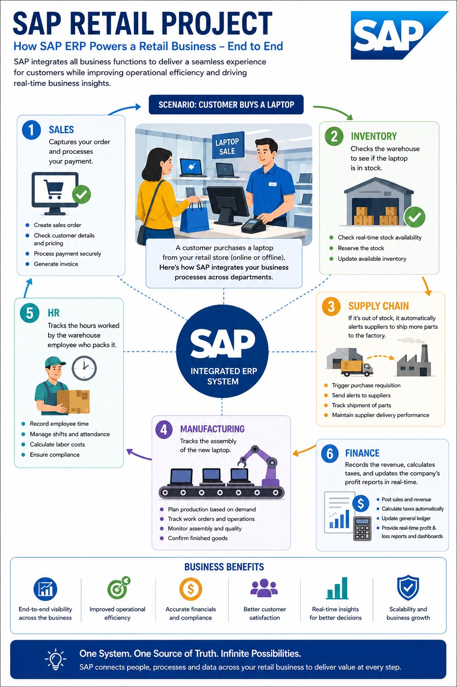

Selected Transformation Program
SAP ECC to S/4HANA Transformation – Retail Industry
🛒 Domain: Retail / Consumer Business
💼 Role: SAP Program / Project Manager
🔄 Transformation: SAP ECC → SAP S/4HANA
☁️ Platform: SAP S/4HANA / SAP BTP / SAP Integration
Business Challenge
The retail organization was operating on a highly customized SAP ECC landscape supporting core finance, sales, procurement, inventory and supply-chain processes. Increasing technical complexity, legacy customizations, integration dependencies and the need for faster business transformation created the need for an SAP S/4HANA modernization program.
The transformation focused on moving from the legacy SAP ECC environment to SAP S/4HANA while simplifying business processes, improving data quality, modernizing integrations and establishing a scalable foundation for future digital retail capabilities.
Program Scope
- Assess the existing SAP ECC landscape, customizations and business processes.
- Define the S/4HANA transformation strategy and target operating model.
- Conduct business process assessment and Fit-to-Standard workshops.
- Define functional and technical gaps requiring remediation or extensions.
- Transform Finance, Sales, Procurement, Inventory and Supply Chain processes.
- Plan and execute master-data and transactional-data migration.
- Modernize SAP and non-SAP integrations.
- Coordinate custom-code remediation and clean-core alignment.
- Manage testing, UAT, cut-over, Go-Live and Hypercare.
- Establish post-Go-Live support and continuous improvement.
Retail Transformation Objectives
- Modernize the legacy SAP ECC platform.
- Simplify highly customized business processes.
- Improve financial and operational data visibility.
- Improve inventory and supply-chain visibility.
- Enable scalable integration with digital retail platforms.
- Improve reporting and analytics capabilities.
- Establish a sustainable S/4HANA architecture.
- Reduce technical debt and improve maintainability.
- Create a foundation for future cloud and digital transformation.
SAP Retail Transformation Architecture
The target architecture modernizes the core ERP platform around SAP S/4HANA while integrating retail applications, digital commerce, warehouse and logistics systems, payment services, analytics and enterprise platforms through governed integration services.

SAP ECC to S/4HANA – Retail Transformation Architecture
Target SAP Architecture
- SAP S/4HANA: Digital core supporting finance, sales, procurement, inventory and supply-chain processes.
- SAP Fiori: Role-based user experience for business users and operational processes.
- SAP BTP: Extension, integration, data and application services.
- SAP Integration Suite: Integration between S/4HANA, retail applications and enterprise platforms.
- SAP Analytics: Business reporting, operational analytics and management insights.
- SAP Commerce / Digital Commerce: Integration with customer-facing digital channels where applicable.
- Warehouse & Logistics: Integration with warehouse, distribution and logistics capabilities.
- External Systems: Payment, tax, banking, supplier, marketplace and other enterprise integrations.
SAP Activate Transformation Lifecycle
01 — Discover
- Understand retail business strategy and transformation drivers.
- Assess SAP ECC landscape and major pain points.
- Identify transformation scope, business value and strategic priorities.
- Define high-level roadmap, governance and program structure.
02 — Prepare
- Establish program governance and delivery organization.
- Confirm scope, timeline, resources and implementation strategy.
- Prepare project environments and implementation standards.
- Establish data, integration, testing and cut-over workstreams.
03 — Explore
- Conduct Fit-to-Standard workshops.
- Validate standard S/4HANA business processes.
- Identify gaps, extensions and required integrations.
- Define process design decisions and backlog.
- Obtain business and architecture alignment.
04 — Realize
- Configure and develop approved S/4HANA capabilities.
- Execute custom-code remediation and required extensions.
- Develop and validate integrations.
- Prepare and cleanse migration data.
- Execute unit, integration and end-to-end testing.
05 — Deploy
- Complete UAT and business sign-off.
- Finalize cut-over and production deployment plan.
- Execute data migration and reconciliation.
- Conduct Go/No-Go readiness assessment.
- Deploy S/4HANA and validate critical retail processes.
06 — Run
- Provide Hypercare and enhanced production support.
- Monitor business processes, integrations and system health.
- Resolve defects and stabilize migrated processes.
- Transition to BAU support and establish continual improvement.
Retail Business Process Transformation
- Finance: General Ledger, Accounts Payable, Accounts Receivable, financial reporting and controlling.
- Procurement: Supplier management, purchasing, purchase orders, goods receipt and invoice processing.
- Sales: Order management, pricing, delivery, billing and customer processes.
- Inventory: Stock management, goods movement, availability and inventory visibility.
- Supply Chain: Planning, procurement, distribution and logistics coordination.
- Retail Operations: Store, product, supplier and customer-related enterprise processes.
- Digital Commerce: Integration between ERP and customer-facing commerce channels.
Data Migration
- Define data migration strategy and scope.
- Identify master and transactional data objects.
- Profile and cleanse legacy ECC data.
- Define source-to-target mappings and transformation rules.
- Execute mock migrations and reconciliation.
- Validate migrated data with business stakeholders.
- Execute final production migration during cut-over.
Integration Modernization
- Inventory SAP ECC interfaces and integration dependencies.
- Assess legacy interfaces for S/4HANA compatibility.
- Modernize selected integrations using APIs and integration services.
- Coordinate SAP and non-SAP application integration.
- Validate end-to-end business transaction flows.
- Establish interface monitoring and operational support.
Testing & Quality Management
- Unit and component testing.
- System Integration Testing (SIT).
- End-to-end business process testing.
- Regression testing.
- Performance and security validation where required.
- User Acceptance Testing (UAT).
- Defect triage, prioritization and closure.
- Business readiness and production sign-off.
Cut-Over & Go-Live
- Develop detailed cut-over plan and command-center structure.
- Coordinate application, infrastructure, data and integration activities.
- Freeze and migration readiness management.
- Execute final data migration and reconciliation.
- Coordinate production deployment and interface activation.
- Conduct Go/No-Go decision governance.
- Validate critical retail business processes following Go-Live.
Hypercare & Stabilization
- Establish enhanced production support model.
- Monitor finance, sales, procurement, inventory and integration processes.
- Coordinate rapid issue triage and resolution.
- Track business-impacting defects and operational incidents.
- Conduct daily stabilization reviews.
- Transition stabilized services to BAU operations.
Program Governance
- Program roadmap, milestones and governance cadence.
- RAID, dependency and decision management.
- Scope, schedule, resource and financial management.
- Architecture and solution governance.
- Data migration and integration governance.
- Testing, quality and defect governance.
- Business readiness and Go-Live governance.
- Executive steering committee reporting.
SAP Program Manager – Roles & Responsibilities
- Program Strategy: Define transformation roadmap, implementation approach, milestones and business outcomes.
- Stakeholder Management: Coordinate business, SAP functional, technical, architecture, integration, data and vendor teams.
- SAP Activate Governance: Govern Discover, Prepare, Explore, Realize, Deploy and Run activities.
- Scope Management: Control scope, changes, priorities and business decisions.
- Dependency Management: Manage cross-workstream and enterprise dependencies.
- Risk Management: Identify and mitigate program, data, integration, testing and Go-Live risks.
- Resource Management: Plan SAP functional, technical, data, integration, testing and business resources.
- Vendor Management: Coordinate SAP partners, implementation partners and technology vendors.
- Financial Management: Manage program budget, forecasts, resource costs and financial governance.
- Executive Reporting: Provide steering committee reporting, decisions, risks and transformation status.
Technology Landscape
- SAP ECC
- SAP S/4HANA
- SAP Fiori
- SAP BTP
- SAP Integration Suite
- SAP Cloud ALM
- SAP Analytics / SAP Analytics Cloud
- SAP Commerce / Digital Commerce
- APIs & Enterprise Integration
- Cloud Infrastructure
- Data Migration & ETL
Key Transformation Metrics
- Business process standardization and simplification.
- Legacy customization reduction.
- Data migration accuracy and reconciliation.
- Integration test completion and interface stability.
- UAT completion and business sign-off.
- Cut-over readiness and deployment success.
- Post-Go-Live defect and incident trends.
- Production stability following Hypercare.
- Business adoption and process readiness.
Transformation Outcome
Established a modern SAP S/4HANA digital core for the retail organization by transforming the legacy SAP ECC landscape, simplifying business processes, modernizing integrations, improving data foundations and establishing a scalable platform for future digital retail transformation.Program Management Takeaway: An ECC-to-S/4HANA transformation is a business transformation, not simply a technical ERP upgrade. Successful delivery requires strong business-process governance, Fit-to-Standard adoption, data quality, integration management, clean-core principles, rigorous testing, disciplined cut-over and close executive stakeholder alignment.